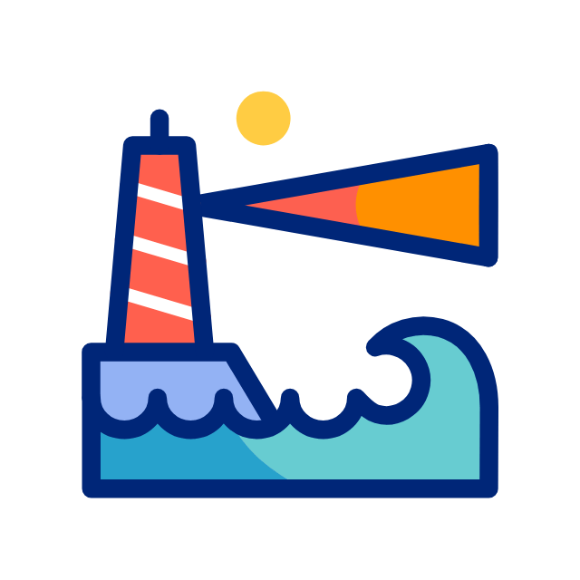

<!DOCTYPE html>

<html>
<head>
<meta charset="utf-8"/>
<meta content="width=device-width, initial-scale=1.0" name="viewport"/>
<meta content="ie=edge" http-equiv="X-UA-Compatible"/>
<title>RITA</title>
<style>
        * {
            margin: 0;
            padding: 0;
        }

        #mindmap {
            display: block;
            width: 100vw;
            height: 100vh;
        }
    </style>
<link href="https://cdn.jsdelivr.net/npm/markmap-toolbar@0.15.4/dist/style.css" rel="stylesheet"/>
<link href="https://cdn.jsdelivr.net/npm/katex@0.16.8/dist/katex.min.css" rel="stylesheet"/>
<link href="https://cdn.jsdelivr.net/npm/@highlightjs/cdn-assets@11.8.0/styles/default.min.css" rel="stylesheet"/>
</head>
<body>
<svg id="mindmap"></svg>
<script src="https://cdn.jsdelivr.net/npm/d3@7.8.5/dist/d3.min.js"></script>
<script src="https://cdn.jsdelivr.net/npm/markmap-view@0.15.4/dist/browser/index.js"></script>
<script src="https://cdn.jsdelivr.net/npm/markmap-toolbar@0.15.4/dist/index.js"></script>
<script>(e => {
    window.WebFontConfig = {
        custom: {families: ["KaTeX_AMS", "KaTeX_Caligraphic:n4,n7", "KaTeX_Fraktur:n4,n7", "KaTeX_Main:n4,n7,i4,i7", "KaTeX_Math:i4,i7", "KaTeX_Script", "KaTeX_SansSerif:n4,n7,i4", "KaTeX_Size1", "KaTeX_Size2", "KaTeX_Size3", "KaTeX_Size4", "KaTeX_Typewriter"]},
        active: () => {
            e().refreshHook.call()
        }
    }
})(() => window.markmap)</script>
<script defer="" src="https://cdn.jsdelivr.net/npm/webfontloader@1.6.28/webfontloader.js"></script>
<script>(() => {
    setTimeout(() => {
        const {markmap: M, mm: ge} = window, me = new M.Toolbar;
        me.attach(ge);
        const fe = me.render();
        fe.setAttribute("style", "position:absolute;bottom:20px;right:20px"), document.body.append(fe)
    })
})()</script>
<script>
    ((F, I, R, H) => {
        const X = F();
        window.mm = X.Markmap.create("svg#mindmap", (I || X.deriveOptions)(H), R)
    })(() => window.markmap, null, {'content': "<div style='display: flex; justify-content: center; align-items: center;'></div> <div style='padding-bottom: 5px; text-align: center;'><font color='teal'><h3>RITA</h3></font></div>", 'depth': 1, 'children': [{'content': '<h4>部署</h4>', 'depth': 2, 'children': [{'content': 'Zeek 是一个对网络流量监测和分类的工具，但不是入侵检测和防御工具', 'depth': 3}, {'content': 'RITA（Real Intelligence Threat Analytics）使用 Zeek 输出的日志来检测网络中的恶意行为，可以和 Zeek 搭配使用', 'depth': 3}, {'content': '数据库 mongodb', 'depth': 3}, {'content': '环境：Ubuntu 20.04 LTS, Debian 11, Security Onion, and CentOS 7', 'depth': 3}, {'content': '部署：<code>sudo ./install.sh</code> 可选 <code>--disable-zeek --disable-mongo</code>', 'depth': 3}]}, {'content': '<h4>Use</h4>', 'depth': 2, 'children': [{'content': "生成 <a href='https://marsvillager.github.io/mindmap/out/Zeek.html'>Zeek</a> 日志", 'depth': 3}, {'content': 'Import Zeek Logs', 'depth': 3, 'children': [{'content': '<code>rita import path/to/your/zeek_logs dataset_name</code> 注：zeek log 文件夹可能需要权限访问，此时加 sudo', 'depth': 4}]}, {'content': 'Viewing Results', 'depth': 3, 'children': [{'content': '<code>rita [COMMAND] dataset_name</code>', 'depth': 4, 'children': [{'content': '<code>show-databases - Print the datasets currently stored</code>', 'depth': 5}, {'content': '<code>show-beacons - Print hosts which show signs of beaconing activity</code>', 'depth': 5}, {'content': '<code>show-bl-hostnames - Print blacklisted hostnames which received connections</code>', 'depth': 5}, {'content': '<code>show-bl-source-ips - Print blacklisted IPs which initiated connections</code>', 'depth': 5}, {'content': '<code>show-bl-dest-ips - Print blacklisted IPs which received connections</code>', 'depth': 5}, {'content': '<code>show-dns-fqdn-ips - Print IPs associated with a specified FQDN</code>', 'depth': 5}, {'content': '<code>show-exploded-dns - Print dns analysis. Exposes covert dns channels</code>', 'depth': 5}, {'content': '<code>show-long-connections - Print long connections and relevant information</code>', 'depth': 5}, {'content': '<code>show-strobes - Print connections which occurred with excessive frequency</code>', 'depth': 5}, {'content': '<code>show-useragents - Print user agent information</code>', 'depth': 5}]}]}, {'content': 'HTML Report', 'depth': 3, 'children': [{'content': '<code>rita html-report dataset_name</code>', 'depth': 4}, {'content': '<b>Beacons</b>', 'depth': 4, 'children': [{'content': 'Score', 'depth': 5, 'children': [{'content': '对同源目的 IP 间的通信，进行分数计算得到 score，其值分布为 0~1 之间，趋近 1 则疑似 beacon 通信行为', 'depth': 6}]}, {'content': 'Source', 'depth': 5, 'children': [{'content': '启动连接的 IP 地址', 'depth': 6}]}, {'content': 'Destination', 'depth': 5, 'children': [{'content': '接收连接的 IP 地址', 'depth': 6}]}, {'content': 'Connections', 'depth': 5, 'children': [{'content': '源 IP 和目标 IP 之间的连接总数', 'depth': 6}]}, {'content': 'Avg. Bytes', 'depth': 5, 'children': [{'content': '每个连接向任一方向传输的平均字节数', 'depth': 6}]}, {'content': 'Total Bytes', 'depth': 5, 'children': [{'content': '两主机之间的总字节数', 'depth': 6}]}, {'content': 'TS Score', 'depth': 5, 'children': [{'content': '', 'depth': 6}]}, {'content': 'DS Score', 'depth': 5, 'children': [{'content': '', 'depth': 6}]}, {'content': 'Dur. Score', 'depth': 5, 'children': [{'content': '', 'depth': 6}]}, {'content': 'Hist. Score', 'depth': 5, 'children': [{'content': '', 'depth': 6}]}, {'content': 'Top Intvl', 'depth': 5, 'children': [{'content': '', 'depth': 6}]}]}, {'content': '<b>Beacons Proxy</b>', 'depth': 4, 'children': [{'content': '', 'depth': 5}]}, {'content': '<b>Beacons SNI</b>', 'depth': 4, 'children': [{'content': '', 'depth': 5}]}, {'content': '<b>Strobes</b>', 'depth': 4, 'children': [{'content': '', 'depth': 5}]}, {'content': '<b>DNS</b>', 'depth': 4, 'children': [{'content': '', 'depth': 5}]}, {'content': '<b>BL Source IPs</b>', 'depth': 4, 'children': [{'content': '', 'depth': 5}]}, {'content': '<b>BL Dest. IPs</b>', 'depth': 4, 'children': [{'content': '', 'depth': 5}]}, {'content': '<b>BL Hostnames</b>', 'depth': 4, 'children': [{'content': '', 'depth': 5}]}, {'content': '<b>Long Connections</b>', 'depth': 4, 'children': [{'content': 'Wireshark -> Statistics -> Conversations', 'depth': 5, 'children': [{'content': 'Ethernet', 'depth': 6}, {'content': 'IPv4', 'depth': 6}, {'content': 'IPv6', 'depth': 6}, {'content': 'TCP', 'depth': 6}, {'content': '等协议可以查看会话持续时间', 'depth': 6}]}, {'content': 'TCP', 'depth': 5, 'children': [{'content': '3-Way Handshake Connection Start (SYN, SYN/ACK, ACK)', 'depth': 6}, {'content': '4-Way Handshake Connection End (FIN, ACK, FIN, ACK)', 'depth': 6}]}, {'content': 'UDP', 'depth': 5, 'children': [{'content': 'stateless protocols', 'depth': 6}, {'content': 'a session is considered started when the first UDP packet is seen and ended when no more UDP packets have been seen for the duration of the time window', 'depth': 6}]}]}, {'content': '<b>User Agents</b>', 'depth': 4, 'children': [{'content': '', 'depth': 5}]}, {'content': '<b>Time Generated</b>', 'depth': 4, 'children': [{'content': '', 'depth': 5}]}]}]}, {'content': '<h4>Reference</h4>', 'depth': 2, 'children': [{'content': '<a>https://github.com/activecm/rita</a>', 'depth': 3}, {'content': '<a>https://activecm.github.io/threat-hunting-labs/basic_usage/</a>', 'depth': 3}, {'content': '<a>https://www.anquanke.com/post/id/266379</a>', 'depth': 3}]}]},
        {"colorFreezeLevel": 2, "initialExpandLevel": 3}
    )
</script>
</body>
</html>